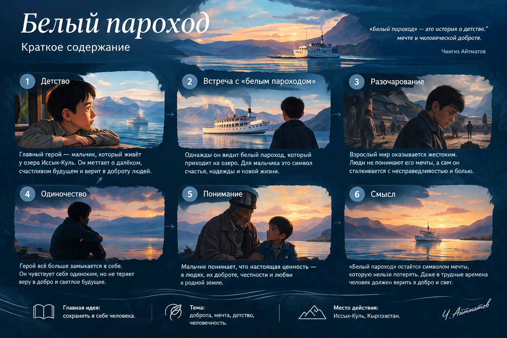
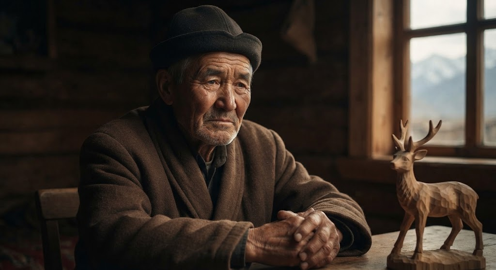
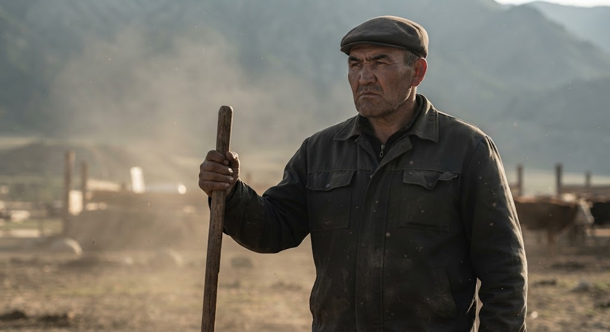
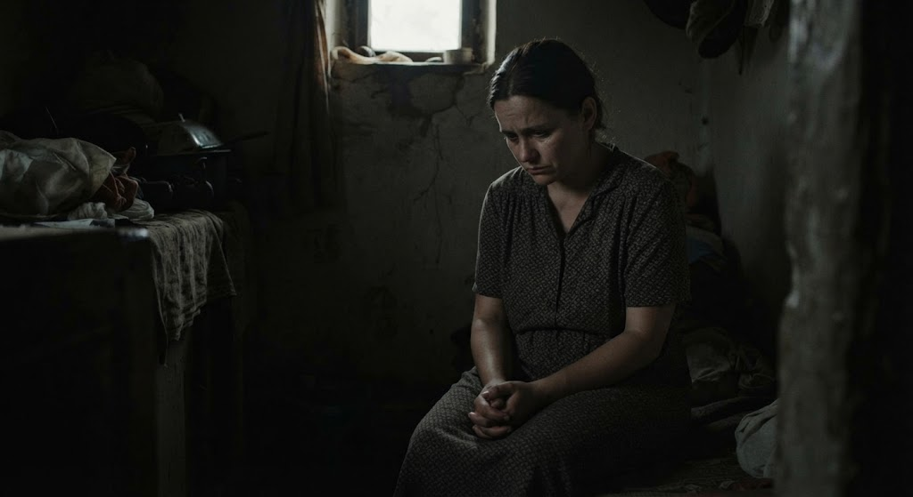
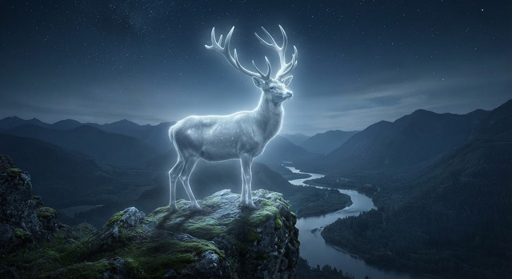

01
+
Добро
Сохранение человечности даже тогда, когда окружающий мир становится жестоким.
↗
Как перенести ценности классической литературы в цифровую среду и сделать их понятными поколению 2026 года.
История о детстве, мечте и человеческой доброте.
Ч. АйтматовBELY PAROHOD — это медиа-сайт, который соединяет литературу, цифровые технологии и социальные сети.
Мы не просто переносим текст повести в интернет. Мы создаём цифровое пространство, в котором подросток может исследовать мир произведения.
Краткий путь Мальчика — от детской мечты до понимания жестокого мира взрослых.

То, что остаётся актуальным спустя десятилетия.
Сохранение человечности даже тогда, когда окружающий мир становится жестоким.
Мечта и надежда, которые помогают человеку сохранять внутренний мир.
Человек не существует отдельно от окружающего мира и несёт за него ответственность.
Связь поколений, история семьи и уважение к культурному наследию.
Нравственный выбор человека и ответственность за последствия собственных поступков.
Ответь на вопросы и попробуй определить, какие ценности раскрываются в повести.
Текст становится интерактивным: видео, аудио, визуализация, тесты и социальные сети помогают по-новому воспринимать классическое произведение.
Представь, что ты оказался внутри мира «Белого парохода».
Здесь нет правильных ответов. Есть только твой выбор.
Войти в историю →
Ты находишься рядом с дедом. Нужно помочь ему с делами, но неподалёку появляется белый пароход — символ твоей мечты.
Твои решения показали, какие ценности для тебя наиболее важны.
Познакомься с героями повести и узнай, какие качества и ценности они раскрывают.
Мальчик — мечтательный, добрый и впечатлительный герой повести. Он живёт в своём внутреннем мире, верит в добро и мечтает увидеть белый пароход. Через его восприятие читатель видит столкновение детской чистоты с жестокостью взрослых.

Момун — добрый, трудолюбивый и отзывчивый человек. Он заботится о внуке и старается сохранить семейные традиции. Несмотря на свою доброту, Момун оказывается слишком мягким перед лицом жестокости и давления окружающих.

Оразкул — властный, грубый и жестокий человек. Он привык думать прежде всего о собственных интересах и не считается с чувствами других. Его образ показывает, к чему могут привести равнодушие, эгоизм и потеря нравственных ориентиров.

Бекей — дочь Момуна и жена Оразкула. Она терпит трудности семейной жизни и старается сохранить отношения в семье. Её образ показывает положение человека, оказавшегося между добротой и жестокостью.

Мать-олениха — один из главных символов повести. В легенде она олицетворяет природу, материнскую любовь, память и связь человека с окружающим миром. Для Мальчика этот образ становится частью его внутреннего мира и веры в добро.